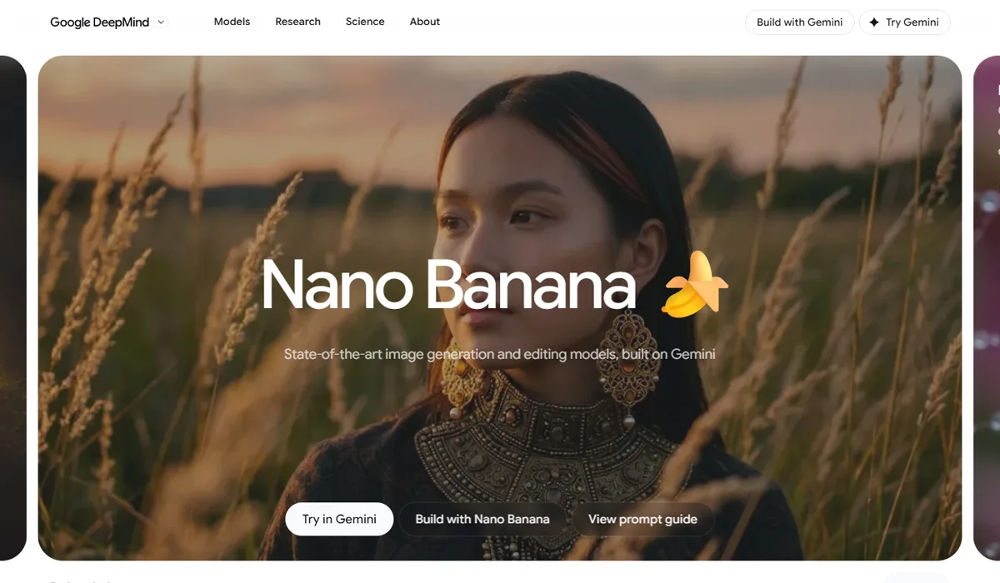
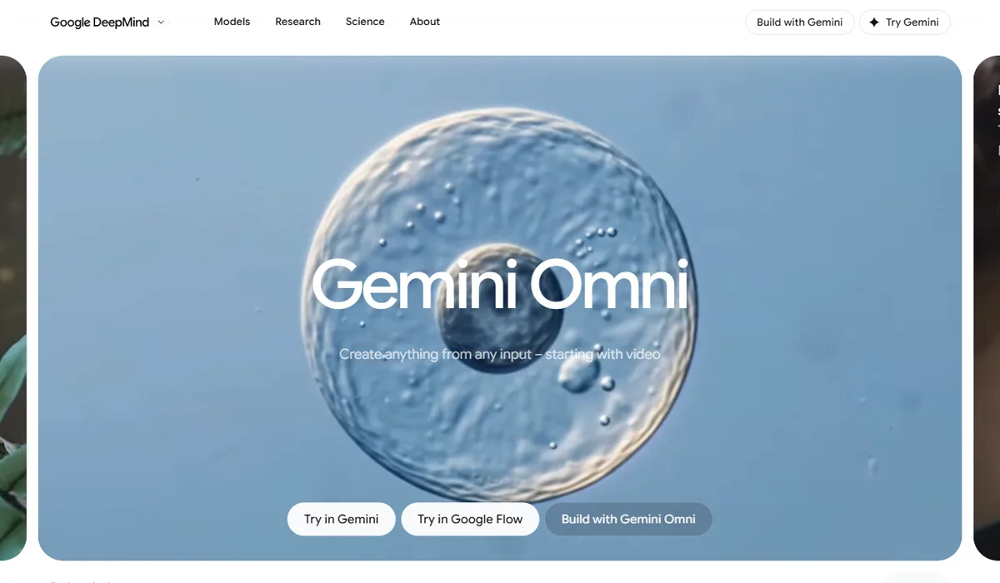
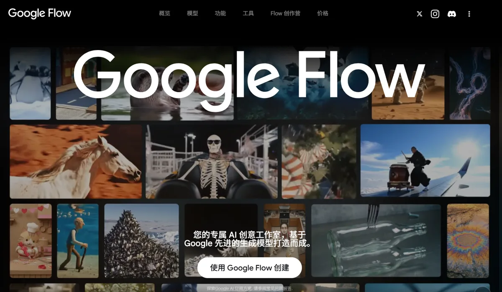

GoogleAlphabet · Google DeepMind
Google 把生图、生视频收进 Gemini 一个模型家族：图像用 Nano Banana，视频用 Gemini Omni，原来的 Imagen 和 Veo 在开发者接口中陆续停用。图像质量排在第一梯队，价格只有 OpenAI 的约六分之一；视频排名落后于几家中国厂商。
一页结论
- 一个模型家族生成所有模态：Gemini Omni 定位为“从任何输入生成任何输出，先从视频开始”；开发者接口里 Imagen 4 已停用、由 Nano Banana 2.1 替代，Veo 3.1 预览版停用、由 Omni 1.1 Flash 替代S2S3
- 图像：高质量 + 低价格：Nano Banana 2.1 排名第 4，每千张 1K 图 33.6 美元；前三名 OpenAI GPT Image 系列每千张约 211 美元S1S13
- 视频：能力完整但排名不领先：Omni 1.1 Flash 支持场景延长到 40 秒、首尾帧控制、最高 4K 输出，但文生视频榜排第 10，阿里 Wan 3.0、MiniMax H3、字节 Seedance 2.5 都在它前面S4S14
- 分发入口最多：Gemini App（月活 10 亿）、搜索 AI 模式、YouTube Shorts、Google Vids（免费生成视频）、Google Ads、Workspace、Flow 都内置生成能力S3S18S28
- 版权压力已经出现：2025 年 12 月迪士尼发出停止侵权函，点名 Veo、Imagen、Nano Banana；2026 年 2 月起 Gemini 开始拦截迪士尼角色相关提示词S16S17
01公司介绍
02公司战略
Google 在生成赛道的主线是“收拢到 Gemini、铺进所有入口”：模型品牌从 Imagen、Veo 收拢为 Nano Banana 和 Gemini Omni，再通过自有入口大规模分发。
- 模型收拢到 Gemini 家族：Nano Banana 基于 Gemini 构建；Gemini Omni 是“能从任何输入生成任何输出”的新模型家族，先做视频，之后支持图像和音频输出S3S6
- 旧产品线退场：Gemini API 中 Imagen 4 全系列 2026 年 8 月 17 日起停用，Veo 3.1 预览版 10 月 22 日起停用，官方推荐分别迁移到 Nano Banana 2.1 和 Omni 1.1 FlashS2
- 创作工具集中到 Flow：2026 年 2 月 Flow 改版，并入 Whisk 和 ImageFX 的能力；Whisk 于 4 月 30 日停止服务S10S11
- 用免费入口扩大用户：Gemini App 免费用户可以生图；Omni Flash 在 YouTube Shorts 和 YouTube Create 中免费使用S3S12
- 同时做高端和低价：图像有 Pro（质量最高）、2.1（主力）、2 Lite（最快最便宜）三档；视频提供 360p 草稿模式，价格为标准 720p 的三分之一S1S4S5
03定位与竞争
一句话定位：为普通用户、创作者、营销团队和开发者，在聊天、搜索、短视频、广告和办公场景中，提供“够好且便宜”的图像与视频生成，并内置在 Google 自有入口里的生成模型家族。
| 目标用户 | 主要入口 | 依据 |
|---|---|---|
| 普通用户 | Gemini App、搜索、Google Photos | Nano Banana 首周带来 1,000 多万 Gemini 新用户、2 亿多次图片编辑S31 |
| 内容创作者 | Flow、YouTube Shorts / Create | Flow 累计生成 15 亿张图片和视频；Omni Flash 在 YouTube 免费S3S10 |
| 营销与广告团队 | Google Ads、WPP Open 等代理商平台 | Nano Banana 2.1 进入 Google Ads；WPP 接入 Omni FlashS5S7 |
| 开发者与企业 | Gemini API、企业云平台 | 按张、按秒计费，支持批量价与预留吞吐量S1S5 |
04产品与模型矩阵
| 类别 | 模型 / 产品 | 定位 | 状态（2026-11） |
|---|---|---|---|
| 图像 | Nano Banana 2.1 | 主力生图与编辑模型，最多 14 张参考图，保持最多 4 个人物、10 个物体一致 | 正式可用（10 月 6 日发布）S6S7 |
| 图像 | Nano Banana Pro | 质量最高的图像模型 | 正式可用S1S2 |
| 图像 | Nano Banana 2 Lite | 最快、最便宜，最快约 4 秒出图 | 正式可用（6 月 30 日发布）S5 |
| 图像 | Imagen 4 | 上一代图像模型 | Gemini API 中 8 月 17 日起停用S2 |
| 视频 | Gemini Omni 1.1 Flash | 文字、图片、视频、语音混合输入生成视频，原生带音频，支持对话式修改 | Gemini API、Flow、Gemini App 可用（8 月 27 日更新）S4 |
| 视频 | Veo 3.1 | 上一代视频模型 | Gemini API 预览版 10 月 22 日起停用；Ultra 订阅说明中仍列出S2S12 |
| 世界模型 | Genie 3 / Project Genie | 实时生成可探索的互动世界，单次最长 60 秒 | 研究原型，仅美国 Ultra 订阅用户S12S15 |
| 3D 资产 | — | 未发现独立的 3D 模型（网格）生成产品 | 见信息缺口 |
| 创作工具 | Google Flow | AI 创作工作室：生图、生视频、剪辑、Agent、自定义工具 | 覆盖 140 多个国家S9 |
| 创作工具 | Google Vids | 办公视频工具，可用 Omni 1.1 Flash 免费生成视频 | 2026 年 9 月起免费开放S28 |
| 创作工具 | Google Pics | Workspace 内的图像生成与精细编辑工具，基于 Nano Banana | 2026 年 5 月发布，先开放给受邀测试者S8S19 |
停用时间指 Gemini API（Google AI Studio）侧；企业云平台（Gemini Enterprise Agent Platform）的停用时间以官方文档为准。
- Nano Banana 发布Gemini 2.5 Flash Image，带动 Gemini App 用户增长S22
- Nano Banana ProGemini 3 Pro Image，质量最高的一档S1
- Project Genie 原型基于 Genie 3 的互动世界生成，仅美国 Ultra 用户S15
- Gemini Omni Flash（I/O）新的全模态生成家族，先做视频S3
- Nano Banana 2 Lite最快最便宜的图像模型；Omni Flash 开放 APIS5



05生成能力与可控性
图像能力排在第一梯队，价格优势明显；视频功能齐全，但第三方盲测排名落后于中国头部厂商。
| 能力 | 图像（Nano Banana 2.1） | 视频（Omni 1.1 Flash） |
|---|---|---|
| 分辨率 | 1K、2K、4KS1 | 标准 720p，可放大到 1080p 或 4K；另有 360p 草稿模式S4 |
| 长度 | — | 单次约 10 秒；场景延长每次 10 秒，最长 40 秒S4 |
| 输入 | 文字 + 最多 14 张参考图；可接入 Google 搜索S7 | 文字、图片、视频（最多 3 秒参考）、语音参考S3S4 |
| 一致性 | 最多 4 个人物、10 个物体保持一致S7 | 多轮修改中保持人物与场景连续；视频参考辅助角色一致S3S4 |
| 编辑 | 多轮对话式编辑S6 | 对话式修改：换角色、改光线、换角度，保留原有音视频轨S5 |
| 控制 | 思考等级（低 / 中 / 高）影响画质S7 | 首尾帧控制，可做环绕镜头、推拉和循环片段S4 |
| 音频 | — | 每段视频原生生成音频S5 |
| 文字渲染 | 官方称文字渲染与信息图有提升S7 | 可在视频中渲染文字与图形S5 |
| 速度 | Nano Banana 2 Lite 最快约 4 秒出图S5 | 360p 草稿比 720p 快最多 60%；Decrypt 在 Google Vids 中实测短片段约 30 秒内生成S4S28 |
第三方评测怎么说
| 评测方 | 时间 | 对比对象 | 结论 |
|---|---|---|---|
| Decrypt（Jose Antonio Lanz） | 2026-05-02 | Nano Banana 2 vs GPT Image 2，8 项 | GPT Image 2 胜 4 项、Nano Banana 2 胜 3 项、1 项平；作者认为两者“非常接近”。Nano Banana 2 强在动漫插画、空间构图；签名字体、密集文字和图像编辑落后S24 |
| Decrypt（Jose Antonio Lanz） | 2026-09-12 | Nano Banana 2 vs ChatGPT Images 2.5，6 项 | 3 比 3，整体美学“基本持平”，胜负取决于少数可核对的小错误S25 |
| Decrypt（Jose Antonio Lanz） | 2026-03-03 | Nano Banana 2 vs 字节 Seedream 5.0 Lite | Nano Banana 2 胜在文字渲染、速度和生态；Seedream 胜在价格、多轮编辑中的人物一致性和扩图准确度S26 |
| Android Authority 转述 Reddit 早期测试者 | 2026-05-12 | Omni Flash 早期版本 | 数学讲解视频推理正确、观感逼真；晚餐场景出现凭空出现的食物；同一提示词下 Seedance 2 更连贯；AI Pro 账户两次生成用掉当日额度的 86%S27 |
| Decrypt | 2026-09-26 | Google Vids 中的 Omni 1.1 Flash | 30 秒内出片，场景延长能保持光线和人物一致；宣传免费 1080p，实测只能生成 720pS28 |
Nano Banana 2.1 发布约 4 周，尚未找到合格的独立对比评测；The Decoder 指出实际使用中 Nano Banana Pro 常常仍然更好S7。接入 Google 模型的平台所写的评测未采用。
评测共识：图像与 OpenAI 处在同一梯队，各有胜负，Google 的优势是文字渲染、速度和价格；视频在连贯性上不如字节 Seedance，第三方榜单也排在中国头部厂商之后。
06解决方案与场景
创意与设计工具
短视频与创作者
办公与个人
07商业模式与价格
两条收费线：个人用户买 Google AI 订阅（按 Flow 额度使用），开发者和企业按张或按秒付 API 费用。
| 模型 | 标准价 | 批量价 |
|---|---|---|
| Nano Banana 2.1 | 1K $0.0336 / 2K $0.0504 / 4K $0.113 每张 | 1K $0.0168 / 2K $0.0252 / 4K $0.0567 每张 |
| Nano Banana Pro | 1K、2K $0.134 / 4K $0.24 每张 | 未列出 |
| Nano Banana 2 Lite | 1K $0.0336 每张 | 1K $0.0168 每张 |
| Gemini Omni 1.1 Flash | 约 $0.10 每秒（720p，按输出 token 计费） | 未列出 |
Gemini API 官方定价，2026-11-04 访问；API 生图与生视频没有免费额度。360p 草稿约为 720p 价格的三分之一。来源：S1S4
| 任务 | 用什么 | 估算成本 |
|---|---|---|
| 一张 1K 电商商品图 | Nano Banana 2.1 | $0.034（批量 $0.017） |
| 一张 4K 海报 | Nano Banana 2.1 / Pro | $0.113 / $0.24 |
| 一条 8 秒 720p 短视频 | Omni 1.1 Flash | 约 $0.80；先用 360p 草稿约 $0.27 |
| 一条 40 秒视频（首段 + 3 次延长） | Omni 1.1 Flash | 约 $4.00 |
按官方单价换算的估算，未含失败重试和多次修改；视频按输出秒数估算。来源：S1S4
| 订阅 | 月费（美国） | 生成相关权益 |
|---|---|---|
| 免费 | $0 | Gemini App 生图与编辑；Flow 中有限使用 Nano Banana Pro |
| AI Plus | $4.99 | 视频生成；Flow 每月 200 额度，可用 Omni Flash |
| AI Pro | $19.99 | Flow 每月 1,000 额度；Veo 3.1 Lite 有限试用 |
| AI Ultra | $99.99 / $199.99 | Flow 每月 10,000 / 25,000 额度；Project Genie |
Google AI 订阅页，2026-11-04 访问；额度用完可另购。来源：S12
08上下游与渠道
| 环节 | 情况 |
|---|---|
| 算力 | 自研 TPU，生成模型训练与推理不依赖外部芯片供应商（详见大模型厂商系列 Google 报告） |
| 训练数据 | Google 向 CNBC 确认用 YouTube 视频训练 Gemini 和 Veo 3，称只用一部分并遵守与创作者、媒体的协议；创作者可以拒绝第三方公司训练，但不能拒绝 Google 自己训练S30 |
| 自有渠道 | Gemini App、搜索、YouTube、Google Photos、Google Ads、Workspace、FlowS3S7S8 |
| 开发者渠道 | Google AI Studio / Gemini API；企业通过 Gemini Enterprise Agent Platform 采购，支持预留吞吐量S5 |
| 第三方平台 | Adobe Firefly、Figma Weave、WPP Open、Invideo、Runway、Artlist、GMI Cloud 等接入S4S5 |
值得注意的是，Runway 这样的视频生成公司也接入了 Omni Flash：在模型层它们是对手，在平台层又是 Google 的渠道S4。
09用户、客户与收入
| 指标 | 数据 | 口径 |
|---|---|---|
| Nano Banana 累计生成 | 500 亿张以上 | 全部 Nano Banana 模型，截至 2026 年 5 月 I/OS8 |
| Nano Banana 首周 | 1,000 多万新用户、2 亿多次图片编辑 | Gemini App，Google 高管在 X 上公布（2025 年 9 月）S31 |
| Nano Banana Pro | 上线 53 天在 Gemini App 生成超过 10 亿张 | Google 高管公开表述（媒体报道）S20 |
| Flow 累计生成 | 15 亿张图片和视频 | Flow 上线至 2026 年 2 月S10 |
| Gemini App 月活 | 9 亿（2026 年 5 月）→ 10 亿（2026 年三季度） | 全部 Gemini App 用户，不只是生成功能用户S8S18 |
| SynthID 水印 | 超过 1,000 亿张图片和视频 | 截至 2026 年 5 月，包含所有带水印的 Google 生成内容S8 |
| 生成业务收入 | 未单独披露 | — |
企业客户与合作方（官方博客点名）：Adobe、WPP、Figma、Manus、Invideo、Artlist、Runway、GMI CloudS4S5。
10用户口碑与容错设计
正面评价
| 容错环节 | Google 的做法 |
|---|---|
| 低成本试错 | 360p 草稿约为 720p 价格的三分之一；图像有更便宜的 Lite 档S4S5 |
| 局部修正 | 对话式多轮编辑；Flow 提供套索工具做局部修改S5S10 |
| 防止改过头 | Google 产品负责人提醒编辑指令要写得非常具体，否则 Omni 可能改掉用户想保留的部分S29 |
| 真伪可查 | SynthID 水印可在 Gemini App、Chrome、搜索中验证S3 |
| 防冒用 | 用真人数字形象生成视频前，需要录一段朗读数字的视频做验证S29 |
用户反馈类内容来自论坛原帖和媒体转述（C 级或转述），只作为线索参考。
11版权与合规
- 内容标识：Omni 生成的所有视频都带 SynthID 隐形水印，可在 Gemini App、Chrome 和搜索中验证；API 侧 Nano Banana 2 Lite 与 Omni Flash 默认开启 C2PA 内容凭证和 SynthIDS3S5
- 迪士尼停止侵权函：2025 年 12 月，迪士尼致函 Alphabet，指控 Google 用其作品训练模型，并通过 Gemini、Veo、Imagen、Nano Banana、YouTube 等产品生成迪士尼角色；该函为警告，不是诉讼S16
- Google 的应对：据 Deadline 报道，2026 年 2 月起 Gemini 与 Nano Banana 开始拦截涉及迪士尼角色的提示词S17
- 对比：同一周迪士尼与 OpenAI 达成 10 亿美元合作，授权 200 多个角色用于 Sora 和 ChatGPT；迪士尼还在起诉 MidjourneyS16
- 使用限制：Flow 与 Project Genie 要求年满 18 岁S9S15
12近期动态
| 时间 | 事件 |
|---|---|
| 2026-10-06 | 发布 Nano Banana 2.1，1K 图片价格比 Nano Banana 2 降一半S1S6 |
| 2026-09-23 | Google Vids 开放用 Omni 1.1 Flash 免费生成视频；同日 OpenAI 关停 Sora API（Decrypt 报道）S28 |
| 2026-10-22 | Gemini API 中 Veo 3.1 预览版停用，推荐迁移到 Omni 1.1 FlashS2 |
| 2026-08-27 | Gemini Omni 1.1 Flash：场景延长、首尾帧、4K 放大、360p 草稿S4 |
| 2026-08-17 | Gemini API 中 Imagen 4 全系列停用S2 |
| 2026-06-30 | Nano Banana 2 Lite 正式可用，Omni Flash 开放 API 预览S5 |
| 2026-05-19 | I/O 发布 Gemini Omni Flash、Google Pics、Flow Agent 与移动端S3S8S9 |
13潜在风险分析意见
- 视频落后：Omni 1.1 Flash 在第三方盲测中落后阿里、MiniMax、字节的模型，视频是 Google 在生成赛道最弱的一环
- 版本更替影响企业客户：一年内两条模型线退场，企业接入需要反复迁移和重新调试提示词，可能推动客户选择更稳定的供应商
- 版权诉讼风险：迪士尼的警告还没有变成诉讼，但 Google 的分发规模越大，被起诉时的潜在赔偿和整改成本越高
- 低价压缩利润：Nano Banana 2.1 降价一半，结合免费入口，生成业务可能长期依赖订阅和云业务补贴
- 3D 缺位：没有独立的 3D 资产生成产品，在游戏、电商 3D 建模等场景暂时让给专业公司
14综合结论分析意见
关键动作拆解（三问法）
| 动作 | 为什么做（推断） | 效果如何 | 要不要学 |
|---|---|---|---|
| 把 Imagen、Veo 并入 Gemini 家族 | 复用 Gemini 的世界知识和推理，减少产品线 | 图像进入第一梯队；视频暂未因此领先S13S14 | 学逻辑：生成和理解共用底座；不学频繁停用旧接口 |
| Nano Banana 2.1 降价一半 | 拉开与 OpenAI 的价差，抢 API 份额 | 价格约为 GPT Image 2 的六分之一，分数只差 13 分S13 | 选型时把单张成本和质量一起看 |
| Omni 免费进 YouTube Shorts 和 Vids | 用免费入口扩大创作者基数 | 使用量未公布；Vids 实测分辨率低于宣传S28 | 观望需要大流量入口和补贴能力 |
| 360p 草稿与 Lite 档 | 降低试错成本，让用户敢多试 | 草稿成本约三分之一S4 | 高优借鉴做“草稿 → 定稿”两段式 |
优势
- 图像第一梯队、价格最低一档
- 入口最多：App、搜索、YouTube、Ads、Workspace
- 安全标识体系完整
劣势
- 视频落后中国头部厂商
- 模型线频繁更替，企业迁移成本高
- 没有 3D 资产生成
机会
- Omni 扩展到图像、音频输出
- 广告与电商素材的大规模生成
- Genie 世界模型走向游戏与仿真
威胁
- 版权诉讼
- 中国厂商视频的性能与价格优势
- OpenAI、Meta、微软在图像上的竞争
对本系列三个问题的回答
- 大厂会不会通吃？ 图像上 Google 接近榜首且最便宜，但视频被阿里、字节和专业公司 MiniMax 超过；Runway 既是对手也接入了 Omni。至少在视频上，大厂没有通吃
- 钱从哪里来？ 订阅（Flow 额度）、API、广告工具三条线，但生成业务收入没有单独披露，加上大量免费入口，它更像拉动订阅和云业务的功能，而不是独立的利润中心
- 3D 离商用还差什么？ Google 没有 3D 资产产品，Genie 仍是单次 60 秒的研究原型；3D 资产生成要看专业公司
对 AI 产品团队的启示
高优借鉴
- 做模型适配层：换模型不牵动业务逻辑和提示词资产（Google 一年停用了两条模型线）
- “草稿 → 定稿”两段式：低分辨率或 Lite 档先试，确认后再出高清，成本可降到约三分之一
- 默认加水印和内容凭证，对外素材避开知名角色与真人肖像
观望
- 一个模型覆盖全部模态：Omni 还没支持图像和音频输出
- 世界模型：Genie 仍是原型，离游戏、电商应用还远
不建议
- 视频为主的场景只押 Google 一家：榜单落后、额度与扣费有争议
- 照搬“免费入口换用户”：需要 Google 级别的流量和补贴能力
信息缺口
以下信息未找到可靠的公开来源，本报告不做推测。
- 生成业务（Nano Banana、Omni、Flow）的单独收入与付费用户数
- Gemini Omni 的使用量（官方未公布生成数量）
- 企业云平台上 Imagen、Veo 的停用时间（本报告只核实了 Gemini API 侧）
- Google Pics 的正式上线时间与价格（媒体说法不一）
- 是否有独立的 3D 资产生成模型或产品
- Nano Banana 2.1 的独立第三方对比评测（发布不久，尚未找到合格来源）
来源
A 官方 · B 权威媒体或第三方 · C 社区（仅用于口碑与线索）。访问日期均为 2026-11-04。
- S1 · AGemini API PricingGoogle AI Studio · 2026-11-04 访问
- S2 · AGemini API deprecationsGoogle AI Studio · 2026-11-04 访问
- S3 · AIntroducing Gemini OmniGoogle 官方博客 · 2026-05-19
- S4 · AGemini Omni 1.1 Flash lets you build with more controlGoogle 官方博客 · 2026-08-27
- S5 · ANano Banana 2 Lite and Gemini Omni Flash availableGoogle Cloud 博客 · 2026-06-30
- S6 · ANano Banana 2.1 Model CardGoogle DeepMind · 2026-10-06
- S7 · BGoogle's new image model Nano Banana 2.1 generates better images for less moneyThe Decoder · 2026-10-06
- S8 · AGoogle I/O 2026: Sundar Pichai's opening keynoteGoogle 官方博客 · 2026-05-19
- S9 · AIntroducing Gemini Omni for Google Flow and Flow MusicGoogle 官方博客 · 2026-05-19
- S10 · AFlow updates: New changes to Google AI video editing toolGoogle 官方博客 · 2026-02
- S11 · AWhisk is moving to Flow on April 30, 2026Google Workspace Updates · 2026-03
- S12 · AGoogle AI 订阅方案Google · 2026-11-04 访问
- S13 · BAA-Image-T2I v2.1 Text to Image LeaderboardArtificial Analysis · 2026-11-04 访问
- S14 · BAA-Video-T2V v2.1 Text to Video LeaderboardArtificial Analysis · 2026-11-04 访问
- S15 · AProject Genie: Experimenting with infinite, interactive worldsGoogle 官方博客 · 2026-01
- S16 · BDisney accuses Google of copyright theft in cease-and-desist letterCartoon Brew · 2025-12-11
- S17 · BGoogle AI tools block Disney-related prompts after legal threatDeadline · 2026-02
- S18 · BAlphabet reports Q3 2026 revenue of $127.6 billion9to5Google（援引财报与电话会） · 2026-10-28
- S19 · BGoogle announces Pics, a Workspace-native AI image generatorThe Next Web · 2026-05-20
- S20 · BGoogle's Nano Banana Pro hits key milestoneAndroid Central · 2026-01
- S21 · ANano Banana 2: Google's latest AI image generation modelGoogle 官方博客 · 2026-02
- S22 · ANano Banana: Image editing in Google Gemini gets a major upgradeGoogle 官方博客 · 2025-08
- S23 · APersonalize your images in the Gemini app with Nano Banana & Google PhotosGoogle 官方博客 · 2026-04-16
- S24 · BOpenAI GPT Image 2 vs Google Nano Banana 2: Which AI Image Generator Is Best?Decrypt · 2026-05-02
- S25 · BChatGPT Images 2.5 vs Nano Banana 2: Which One is Better?Decrypt · 2026-09-12
- S26 · BGoogle Nano Banana 2 vs ByteDance Seedream 5.0 LiteDecrypt · 2026-03-03
- S27 · BEarly look: Gemini Omni generates realistic AI video in new leakAndroid Authority（转述 Reddit 测试者） · 2026-05-12
- S28 · BGoogle Just Made Free 1080p AI Video Generation Available to AnyoneDecrypt · 2026-09-26
- S29 · BGoogle's Gemini Omni turns images, audio, and text into videoTechCrunch · 2026-05-19
- S30 · BGoogle is using YouTube videos to train its AI video generatorCNBC · 2025-06-19
- S31 · BNano Banana drove over 10 million new users to the Gemini app9to5Google（援引 Google 高管 X 帖子） · 2025-09-04
- S32 · CFlow Omni Flash pass-through bug: requesting credit refundGoogle AI 开发者论坛（用户原帖） · 2026-07-06